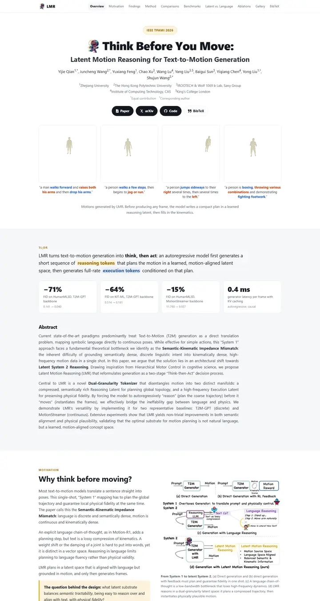

Think Before You Move: Latent Motion Reasoning for Text-to-Motion Generation
A clean lab notebook with two highlighters: amber marks what the model thinks, blue marks what it does, and everything else is ink on white.

Checked against the rendered page. Nav highlighting only starts after scrolling, so the 1440x900 render has no active link.
Why it is here
Rich and polished. Sticky section nav, a venue pill, a captioned motion gallery and a TL;DR band with highlighted tokens and stat cards, then a two-column motivation section with a tinted callout. Rhythm is strong throughout.
Overview
Color Palette
Typography
System UI stack
Think Before You Move: Latent Motion Reasoning for Text-to-Motion Gene
Abstract · Method · Results · BibTeX — 0123456789
ui-monospace
Think Before You Move: Latent Motion Reasoning for Text-to-Motion Gene
Abstract · Method · Results · BibTeX — 0123456789
Cambria Math for the method equation
Think Before You Move: Latent Motion Reasoning for Text-to-Motion Gene
Abstract · Method · Results · BibTeX — 0123456789
Spacing & Shape
Page Modules
Guidelines
More like this

CRAFT: Training-Free Cascaded Retrieval for Tabular QA
A tidy product manual in pale blueprint blue, where every stage wears its own colored edge.

Efficient Self-Evaluation for Diffusion Language Models via Sequence Regeneration
A tidy stack of rounded cards washed in a blue-violet-apricot dawn, signed with a gradient wordmark.

FIGMA: Towards FIne-Grained Music retrievAl
A music journal on warm paper: a heavy Newsreader headline under a red kicker, big red serif numerals for the results, and figures resting in soft cream frames.

GuideDog: A Real-World Egocentric Multimodal Dataset for Blind and Low-Vision Accessibility-Aware Guidance
A quiet monograph page: one serif column, oxblood ink for the links, and a table that blushes only at its own row.

LaMI: Augmenting Large Language Models via Late Multi-Image Fusion
A careful conference handout: Noto Serif headings, navy outlined buttons and soft grey bands taking turns.

PairCoder++: Pair Programming as a Universal Paradigm for Verified Code-Driven Multimodal and Structured-Artifact Generation
A crisp white product page: a blue announcement strip, ink-black pill buttons and every figure on a soft-shadowed card.